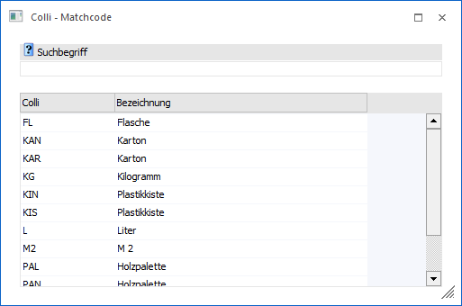
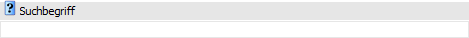
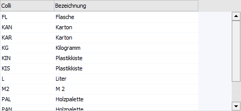
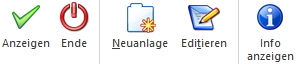

Wenn der Fokus in dem Feld "Colli" liegt und das Lupen-Symbol bzw. die Taste F9 gedrückt wird, dann öffnet sich das Programm "Colli - Matchcode". An dieser Stelle kann gezielt nach Collis gesucht werden.
Hinweis
Wenn in dem Feld "Colli" ein Teil des gesuchten Collis oder der Bezeichnung eingetragen wurde und die Taste F9 gedrückt wird, dann wird diese Eingabe als Suchbegriff übernommen und die Suche direkt gestartet.

Suchbegriff

Ø Suchbegriff
Durch Eingabe und Bestätigung eines Suchbegriffs wird in der Colli-Nummer und der Colli-Bezeichnung gesucht und die Suchergebnistabelle entsprechend aufgebaut.
Tabelle "Suchergebnis"

In der Tabelle werden nach Auslösen der Suche (Button "Anzeigen" oder Suchbegriff bestätigen) die gefundenen Collis mit ihrer Nummer und Bezeichnung angezeigt. Per Doppelklick oder Enter-Taste kann das ausgewählte Objekt anschließend in das Ausgangsfenster übernommen werden.
Hinweis
Neben den Standard-Spalten können über das Kontextmenü der rechten Maustaste (Funktion "Spalten anzeigen / verstecken") jederzeit folgende Spalten hinzugefügt bzw. entfernt werden:
ü Bezeichnung 2
ü Stückfaktor
ü Preisfaktor
Tabellenbuttons

Ø Ausgabe Excel
Durch Anwahl des Buttons "Ausgabe Excel" wird der Inhalt der Tabelle an Microsoft Excel übergeben.
Ø Tabelleneinstellungen speichern
Die Spalten einer Tabelle können grundsätzlich an beliebige Positionen verschoben, bzw. in der Breite entsprechend angepasst werden. Durch Anwahl des Buttons "Tabelleneinstellungen speichern" werden die Einstellungen benutzerspezifisch gespeichert und bei dem nächsten Aufruf des Programmpunktes wieder vorgeschlagen.
Ø Gesamteinstellungen speichern
Im Gegensatz zu "Tabelleneinstellungen speichern" können mit "Gesamteinstellungen speichern" mehrere Tabellenaufbauten gespeichert und nach Wunsch geladen werden. Zusätzlich werden Sonderfunktionen der Tabelle (z.B. "Spalte gruppieren") ebenfalls bei der Speicherung bedacht.
Buttons

Ø Anzeigen
Durch Anwahl des Buttons "Anzeigen" bzw. der Taste F5 wird die Suche gestartet.
Hinweis
Durch Bestätigung der Eingabe im Feld "Suchbegriff" wird die Suche ebenfalls gestartet.
Ø Ende
Durch Anwahl des Buttons "Ende" bzw. der Taste ESC wird der Programmbereich geschlossen.
Ø Neuanlage
Durch Anklicken des Buttons "Neuanlage" öffnet sich das Fenster "Colli - Stamm", wo neue Collis angelegt werden können.
Ø Editieren
Bei Anwahl des Buttons "Editieren" wird der aktuell markierte Colli im Colli-Stamm zum Editieren geöffnet.
Ø Info anzeigen
Durch Anwahl des Buttons wird neben der Tabelle "Suchergebnis" ein Informationsbereich aktiviert, in welchem Informationen zu dem markierten Colli ausgewiesen werden.
Hinweis
Die Aktivierung bzw. Deaktivierung des Informationsbereichs wird benutzerspezifisch gespeichert.